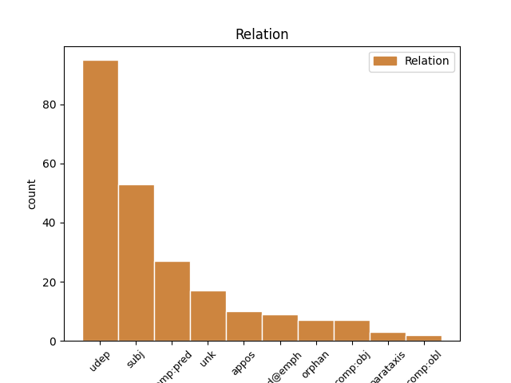
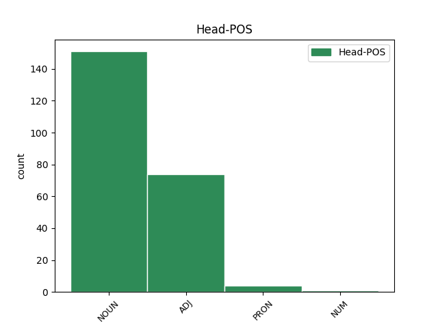
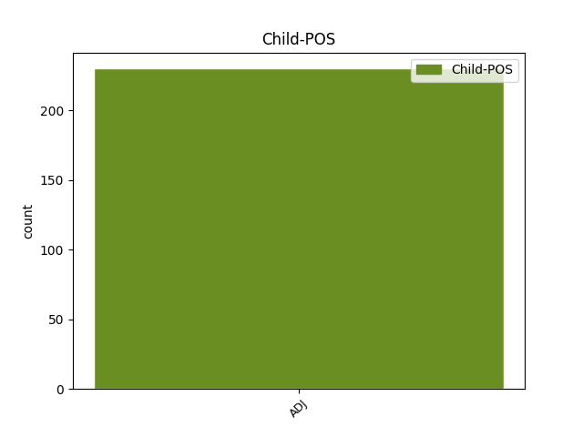

Distribution of features within this leaf



Agreement Rules sorted by frequency.
- When the dependent token is the subject(subj) of the head token, and the head token is NOUN and the dependent token is ADJ.
1 دافع _ _ _ _ 0 _ _ _
2 المستشار _ _ _ _ 0 _ _ _
3 الالمانى _ _ _ _ 0 _ _ _
4 جيرهارد _ _ _ _ 0 _ _ _
5 شرودر _ _ _ _ 0 _ _ _
6 اليوم _ _ _ _ 0 _ _ _
7 عن _ _ _ _ 0 _ _ _
8 موقف _ _ _ _ 0 _ _ _
9 حكومة _ _ _ _ 0 _ _ _
10 ه _ _ _ _ 0 _ _ _
11 المعارض _ _ _ _ 0 _ _ _
12 ل _ _ _ _ 0 _ _ _
13 الحرب _ _ _ _ 0 _ _ _
14 التى _ _ _ _ 0 _ _ _
15 قادت _ _ _ _ 0 _ _ _
16 ها _ _ _ _ 0 _ _ _
17 الولايات وِلَايَة NOUN N------P1D Case=Nom|Definite=Def|Number=Plur 0 _ _ _
18 المتحدة مُتَّحِد ADJ A-----FS1D Case=Nom|Definite=Def|Gender=Fem|Number=Sing 17 subj _ Gloss=united|LTranslit=muttaḥid|Root=w_.h_d|Translit=al-muttaḥidatu|Vform=اَلمُتَّحِدَةُ
19 ضد _ _ _ _ 0 _ _ _
20 العراق _ _ _ _ 0 _ _ _
21 و _ _ _ _ 0 _ _ _
22 سياسة _ _ _ _ 0 _ _ _
23 الحكومة _ _ _ _ 0 _ _ _
24 حول _ _ _ _ 0 _ _ _
25 اوربا _ _ _ _ 0 _ _ _
26 قوية _ _ _ _ 0 _ _ _
27 . _ _ _ _ 0 _ _ _
1 كما _ _ _ _ 0 _ _ _
2 استطاعت _ _ _ _ 0 _ _ _
3 دمشق _ _ _ _ 0 _ _ _
4 تبديد تَبدِيد NOUN N------S4R Case=Acc|Definite=Cons|Number=Sing 0 _ _ _
5 الشكوك _ _ _ _ 0 _ _ _
6 الامريكية _ _ _ _ 0 _ _ _
7 قليلا قَلِيل ADJ A-----MS4I Case=Acc|Definite=Ind|Gender=Masc|Number=Sing 4 udep _ Gloss=few,insufficient,little|LTranslit=qalīl|Root=q_l_l|Translit=qalīlan|Vform=قَلِيلًا
8 ازاء _ _ _ _ 0 _ _ _
9 دعم _ _ _ _ 0 _ _ _
10 ها _ _ _ _ 0 _ _ _
11 المزعوم _ _ _ _ 0 _ _ _
12 " _ _ _ _ 0 _ _ _
13 ل _ _ _ _ 0 _ _ _
14 الإرهاب _ _ _ _ 0 _ _ _
15 " _ _ _ _ 0 _ _ _
16 عندما _ _ _ _ 0 _ _ _
17 ادانت _ _ _ _ 0 _ _ _
18 احداث _ _ _ _ 0 _ _ _
19 11 _ _ _ _ 0 _ _ _
20 سبتمبر _ _ _ _ 0 _ _ _
21 و _ _ _ _ 0 _ _ _
22 ساعدت _ _ _ _ 0 _ _ _
23 المحققين _ _ _ _ 0 _ _ _
24 الامريكيين _ _ _ _ 0 _ _ _
25 ب _ _ _ _ 0 _ _ _
26 هٰذا _ _ _ _ 0 _ _ _
27 الخصوص _ _ _ _ 0 _ _ _
28 الامر _ _ _ _ 0 _ _ _
29 الذي _ _ _ _ 0 _ _ _
30 ساعد _ _ _ _ 0 _ _ _
31 في _ _ _ _ 0 _ _ _
32 تقريب _ _ _ _ 0 _ _ _
33 وجهات _ _ _ _ 0 _ _ _
34 النظر _ _ _ _ 0 _ _ _
35 بين _ _ _ _ 0 _ _ _
36 البلدين _ _ _ _ 0 _ _ _
37 غير _ _ _ _ 0 _ _ _
38 ان _ _ _ _ 0 _ _ _
39 الازمة _ _ _ _ 0 _ _ _
40 العراقية _ _ _ _ 0 _ _ _
41 جددت _ _ _ _ 0 _ _ _
42 التوتر _ _ _ _ 0 _ _ _
43 مرة _ _ _ _ 0 _ _ _
44 اخرى _ _ _ _ 0 _ _ _
45 بين _ _ _ _ 0 _ _ _
46 البلدين _ _ _ _ 0 _ _ _
47 اذ _ _ _ _ 0 _ _ _
48 عارضت _ _ _ _ 0 _ _ _
49 سورية _ _ _ _ 0 _ _ _
50 ب _ _ _ _ 0 _ _ _
51 صفة _ _ _ _ 0 _ _ _
52 ها _ _ _ _ 0 _ _ _
53 العضو _ _ _ _ 0 _ _ _
54 غير _ _ _ _ 0 _ _ _
55 الدائم _ _ _ _ 0 _ _ _
56 في _ _ _ _ 0 _ _ _
57 مجلس _ _ _ _ 0 _ _ _
58 الامن _ _ _ _ 0 _ _ _
59 الدولى _ _ _ _ 0 _ _ _
60 توجيه _ _ _ _ 0 _ _ _
61 ضربة _ _ _ _ 0 _ _ _
62 عسكرية _ _ _ _ 0 _ _ _
63 الى _ _ _ _ 0 _ _ _
64 العراق _ _ _ _ 0 _ _ _
65 مما _ _ _ _ 0 _ _ _
66 اغضب _ _ _ _ 0 _ _ _
67 المسؤولين _ _ _ _ 0 _ _ _
68 الامريكيين _ _ _ _ 0 _ _ _
69 و _ _ _ _ 0 _ _ _
70 دفع _ _ _ _ 0 _ _ _
71 هم _ _ _ _ 0 _ _ _
72 الى _ _ _ _ 0 _ _ _
73 توجيه _ _ _ _ 0 _ _ _
74 الاتهامات _ _ _ _ 0 _ _ _
75 ل _ _ _ _ 0 _ _ _
76 سورية _ _ _ _ 0 _ _ _
77 . _ _ _ _ 0 _ _ _
1 الماكينات مَاكِينَة NOUN N------P1D Case=Nom|Definite=Def|Number=Plur 0 _ _ _
2 و _ _ _ _ 0 _ _ _
3 المنتجات _ _ _ _ 0 _ _ _
4 الالكترونية _ _ _ _ 0 _ _ _
5 و _ _ _ _ 0 _ _ _
6 الأجهزة _ _ _ _ 0 _ _ _
7 السمعية _ _ _ _ 0 _ _ _
8 و _ _ _ _ 0 _ _ _
9 البصرية _ _ _ _ 0 _ _ _
10 و _ _ _ _ 0 _ _ _
11 قطع _ _ _ _ 0 _ _ _
12 الغيار _ _ _ _ 0 _ _ _
13 و _ _ _ _ 0 _ _ _
14 اللوازم _ _ _ _ 0 _ _ _
15 المتعلقة _ _ _ _ 0 _ _ _
16 : _ _ _ _ 0 _ _ _
17 726.530 _ _ _ _ 0 _ _ _
18 مليون _ _ _ _ 0 _ _ _
19 دولار _ _ _ _ 0 _ _ _
20 امريكى _ _ _ _ 0 _ _ _
21 الجلود جَلُود ADJ A-----MS1D Case=Nom|Definite=Def|Gender=Masc|Number=Sing 1 unk _ Gloss=patient|LTranslit=ǧalūd|Root=^g_l_d|Translit=al-ǧalūdu|Vform=اَلجَلُودُ
22 و _ _ _ _ 0 _ _ _
23 الفراء _ _ _ _ 0 _ _ _
24 و _ _ _ _ 0 _ _ _
25 المنتجات _ _ _ _ 0 _ _ _
26 المتعلقة _ _ _ _ 0 _ _ _
27 : _ _ _ _ 0 _ _ _
28 65.816 _ _ _ _ 0 _ _ _
29 مليون _ _ _ _ 0 _ _ _
30 دولار _ _ _ _ 0 _ _ _
31 امريكى _ _ _ _ 0 _ _ _
32 المنتجات _ _ _ _ 0 _ _ _
33 الكيماوية _ _ _ _ 0 _ _ _
34 و _ _ _ _ 0 _ _ _
35 المنتجات _ _ _ _ 0 _ _ _
36 المتعلقة _ _ _ _ 0 _ _ _
37 : _ _ _ _ 0 _ _ _
38 82.624 _ _ _ _ 0 _ _ _
39 مليون _ _ _ _ 0 _ _ _
40 دولار _ _ _ _ 0 _ _ _
41 امريكى _ _ _ _ 0 _ _ _
42 مواد _ _ _ _ 0 _ _ _
43 خام _ _ _ _ 0 _ _ _
44 و _ _ _ _ 0 _ _ _
45 المنسوجات _ _ _ _ 0 _ _ _
46 و _ _ _ _ 0 _ _ _
47 المنتجات _ _ _ _ 0 _ _ _
48 المتعلقة _ _ _ _ 0 _ _ _
49 : _ _ _ _ 0 _ _ _
50 63.669 _ _ _ _ 0 _ _ _
51 مليون _ _ _ _ 0 _ _ _
52 دولار _ _ _ _ 0 _ _ _
53 امريكى _ _ _ _ 0 _ _ _
54 المعادن _ _ _ _ 0 _ _ _
55 الاساسية _ _ _ _ 0 _ _ _
56 و _ _ _ _ 0 _ _ _
57 المنتجات _ _ _ _ 0 _ _ _
58 : _ _ _ _ 0 _ _ _
59 71.332 _ _ _ _ 0 _ _ _
60 مليون _ _ _ _ 0 _ _ _
61 دولار _ _ _ _ 0 _ _ _
62 امريكى _ _ _ _ 0 _ _ _
63 المنتجات _ _ _ _ 0 _ _ _
64 البصرية _ _ _ _ 0 _ _ _
65 و _ _ _ _ 0 _ _ _
66 الطبية _ _ _ _ 0 _ _ _
67 : _ _ _ _ 0 _ _ _
68 46.460 _ _ _ _ 0 _ _ _
69 مليون _ _ _ _ 0 _ _ _
70 دولار _ _ _ _ 0 _ _ _
71 امريكى _ _ _ _ 0 _ _ _
72 المنتجات _ _ _ _ 0 _ _ _
73 البلاستيكية _ _ _ _ 0 _ _ _
74 و _ _ _ _ 0 _ _ _
75 المطاطية _ _ _ _ 0 _ _ _
76 : _ _ _ _ 0 _ _ _
77 32.491 _ _ _ _ 0 _ _ _
78 مليون _ _ _ _ 0 _ _ _
79 دولار _ _ _ _ 0 _ _ _
80 امريكى _ _ _ _ 0 _ _ _
1 على _ _ _ _ 0 _ _ _
2 صعيد _ _ _ _ 0 _ _ _
3 آخر _ _ _ _ 0 _ _ _
4 ، _ _ _ _ 0 _ _ _
5 عرض _ _ _ _ 0 _ _ _
6 الأمين _ _ _ _ 0 _ _ _
7 العام _ _ _ _ 0 _ _ _
8 ل _ _ _ _ 0 _ _ _
9 الجامعة _ _ _ _ 0 _ _ _
10 العربية _ _ _ _ 0 _ _ _
11 عمرو _ _ _ _ 0 _ _ _
12 موسى _ _ _ _ 0 _ _ _
13 يوم _ _ _ _ 0 _ _ _
14 1 _ _ _ _ 0 _ _ _
15 / _ _ _ _ 0 _ _ _
16 12 _ _ _ _ 0 _ _ _
17 على _ _ _ _ 0 _ _ _
18 مبارك _ _ _ _ 0 _ _ _
19 الاقتراحات _ _ _ _ 0 _ _ _
20 الخاصة _ _ _ _ 0 _ _ _
21 ب _ _ _ _ 0 _ _ _
22 إصلاح _ _ _ _ 0 _ _ _
23 الجامعة _ _ _ _ 0 _ _ _
24 و _ _ _ _ 0 _ _ _
25 المعروضة مَعرُوض ADJ A-----FS4D Case=Acc|Definite=Def|Gender=Fem|Number=Sing 0 _ _ _
26 حالياً حَالِيّ ADJ A-----MS4I Case=Acc|Definite=Ind|Gender=Masc|Number=Sing 25 udep _ Gloss=current,present|LTranslit=ḥālīy|Root=.h_w_l|Translit=ḥālīyan|Vform=حَالِيًّا
27 على _ _ _ _ 0 _ _ _
28 الدول _ _ _ _ 0 _ _ _
29 العربية _ _ _ _ 0 _ _ _
30 ل _ _ _ _ 0 _ _ _
31 درس _ _ _ _ 0 _ _ _
32 ها _ _ _ _ 0 _ _ _
33 تمهيدا _ _ _ _ 0 _ _ _
34 ل _ _ _ _ 0 _ _ _
35 عرض _ _ _ _ 0 _ _ _
36 ها _ _ _ _ 0 _ _ _
37 على _ _ _ _ 0 _ _ _
38 القمة _ _ _ _ 0 _ _ _
39 المقبلة _ _ _ _ 0 _ _ _
40 في _ _ _ _ 0 _ _ _
41 تونس _ _ _ _ 0 _ _ _
42 في _ _ _ _ 0 _ _ _
43 مارس _ _ _ _ 0 _ _ _
44 المقبل _ _ _ _ 0 _ _ _
45 . _ _ _ _ 0 _ _ _
1 و _ _ _ _ 0 _ _ _
2 يتمثل _ _ _ _ 0 _ _ _
3 المحور _ _ _ _ 0 _ _ _
4 الثالث _ _ _ _ 0 _ _ _
5 من _ _ _ _ 0 _ _ _
6 الاتفاق _ _ _ _ 0 _ _ _
7 مع _ _ _ _ 0 _ _ _
8 شركتين _ _ _ _ 0 _ _ _
9 متخصصتين _ _ _ _ 0 _ _ _
10 في _ _ _ _ 0 _ _ _
11 المعارض _ _ _ _ 0 _ _ _
12 إحدى _ _ _ _ 0 _ _ _
13 هما _ _ _ _ 0 _ _ _
14 فرنسية _ _ _ _ 0 _ _ _
15 و _ _ _ _ 0 _ _ _
16 الأخرى آخَر ADJ A-----FS1D Case=Nom|Definite=Def|Gender=Fem|Number=Sing 17 subj _ Gloss=another,other|LTranslit=ʾāḫar|Root='__h_r|Translit=al-ʾuḫrā|Vform=اَلأُخرَى
17 إنجليزية إِنجلِيزِيّ ADJ A-----FS1I Case=Nom|Definite=Ind|Gender=Fem|Number=Sing 0 _ _ _
18 ل _ _ _ _ 0 _ _ _
19 عمل _ _ _ _ 0 _ _ _
20 معارض _ _ _ _ 0 _ _ _
21 متخصصة _ _ _ _ 0 _ _ _
22 سواء _ _ _ _ 0 _ _ _
23 من _ _ _ _ 0 _ _ _
24 جوهانسبرج _ _ _ _ 0 _ _ _
25 أو _ _ _ _ 0 _ _ _
26 بريتوريا _ _ _ _ 0 _ _ _
27 أو _ _ _ _ 0 _ _ _
28 كيب _ _ _ _ 0 _ _ _
29 تاون _ _ _ _ 0 _ _ _
30 ب _ _ _ _ 0 _ _ _
31 صفة _ _ _ _ 0 _ _ _
32 دورية _ _ _ _ 0 _ _ _
33 و _ _ _ _ 0 _ _ _
34 ب _ _ _ _ 0 _ _ _
35 ما _ _ _ _ 0 _ _ _
36 يهدف _ _ _ _ 0 _ _ _
37 إلى _ _ _ _ 0 _ _ _
38 جذب _ _ _ _ 0 _ _ _
39 أكبر _ _ _ _ 0 _ _ _
40 عدد _ _ _ _ 0 _ _ _
41 من _ _ _ _ 0 _ _ _
42 العملاء _ _ _ _ 0 _ _ _
43 نظراً _ _ _ _ 0 _ _ _
44 ل _ _ _ _ 0 _ _ _
45 السمعة _ _ _ _ 0 _ _ _
46 العالية _ _ _ _ 0 _ _ _
47 ل _ _ _ _ 0 _ _ _
48 هٰذه _ _ _ _ 0 _ _ _
49 الشركات _ _ _ _ 0 _ _ _
50 في _ _ _ _ 0 _ _ _
51 تنفيذ _ _ _ _ 0 _ _ _
52 المعارض _ _ _ _ 0 _ _ _
53 المتخصصة _ _ _ _ 0 _ _ _
54 من _ _ _ _ 0 _ _ _
55 جهة _ _ _ _ 0 _ _ _
56 و _ _ _ _ 0 _ _ _
57 قاعدة _ _ _ _ 0 _ _ _
58 العملاء _ _ _ _ 0 _ _ _
59 الضخمة _ _ _ _ 0 _ _ _
60 لدي _ _ _ _ 0 _ _ _
61 ها _ _ _ _ 0 _ _ _
62 من _ _ _ _ 0 _ _ _
63 جراء _ _ _ _ 0 _ _ _
64 تنفيذ _ _ _ _ 0 _ _ _
65 أعداد _ _ _ _ 0 _ _ _
66 كبيرة _ _ _ _ 0 _ _ _
67 من _ _ _ _ 0 _ _ _
68 الصفقات _ _ _ _ 0 _ _ _
69 الناجحة _ _ _ _ 0 _ _ _
70 من _ _ _ _ 0 _ _ _
71 تلك _ _ _ _ 0 _ _ _
72 المعارض _ _ _ _ 0 _ _ _
73 من _ _ _ _ 0 _ _ _
74 جهة _ _ _ _ 0 _ _ _
75 أخرى _ _ _ _ 0 _ _ _
76 . _ _ _ _ 0 _ _ _
1 ب _ _ _ _ 0 _ _ _
2 الإضافة _ _ _ _ 0 _ _ _
3 إلى _ _ _ _ 0 _ _ _
4 سخانات _ _ _ _ 0 _ _ _
5 المياه _ _ _ _ 0 _ _ _
6 ، _ _ _ _ 0 _ _ _
7 و _ _ _ _ 0 _ _ _
8 عدادات عَدَّاد NOUN N------P2R Case=Gen|Definite=Cons|Number=Plur 0 _ _ _
9 سيارات _ _ _ _ 0 _ _ _
10 الأجرة _ _ _ _ 0 _ _ _
11 ، _ _ _ _ 0 _ _ _
12 و _ _ _ _ 0 _ _ _
13 الثلاجات _ _ _ _ 0 _ _ _
14 و _ _ _ _ 0 _ _ _
15 المبردات مُبَرِّد ADJ A-----FP2D Case=Gen|Definite=Def|Gender=Fem|Number=Plur 8 orphan _ Gloss=refreshing|LTranslit=mubarrid|Root=b_r_d|Translit=al-mubarridāti|Vform=اَلمُبَرِّدَاتِ
16 ، _ _ _ _ 0 _ _ _
17 و _ _ _ _ 0 _ _ _
18 المضخات _ _ _ _ 0 _ _ _
19 الهوائية _ _ _ _ 0 _ _ _
20 ، _ _ _ _ 0 _ _ _
21 و _ _ _ _ 0 _ _ _
22 أسلاك _ _ _ _ 0 _ _ _
23 النحاس _ _ _ _ 0 _ _ _
24 . _ _ _ _ 0 _ _ _
1 و _ _ _ _ 0 _ _ _
2 يتضمن _ _ _ _ 0 _ _ _
3 برنامج _ _ _ _ 0 _ _ _
4 المهرجان _ _ _ _ 0 _ _ _
5 عروضا _ _ _ _ 0 _ _ _
6 ل _ _ _ _ 0 _ _ _
7 الفروسية _ _ _ _ 0 _ _ _
8 و _ _ _ _ 0 _ _ _
9 زيارات _ _ _ _ 0 _ _ _
10 ل _ _ _ _ 0 _ _ _
11 إسطبلات _ _ _ _ 0 _ _ _
12 مؤسسة _ _ _ _ 0 _ _ _
13 تربية _ _ _ _ 0 _ _ _
14 الخيول _ _ _ _ 0 _ _ _
15 بسيدى _ _ _ _ 0 _ _ _
16 ثابت _ _ _ _ 0 _ _ _
17 ب _ _ _ _ 0 _ _ _
18 الإضافة _ _ _ _ 0 _ _ _
19 الى _ _ _ _ 0 _ _ _
20 عروض عَرض NOUN N------P2I Case=Gen|Definite=Ind|Number=Plur 0 _ _ _
21 فلكلورية _ _ _ _ 0 _ _ _
22 و _ _ _ _ 0 _ _ _
23 عروض _ _ _ _ 0 _ _ _
24 تشكيلية _ _ _ _ 0 _ _ _
25 مجسمة مُجَسَّم ADJ A-----FS2I Case=Gen|Definite=Ind|Gender=Fem|Number=Sing 20 comp:pred _ Gloss=bodily,embodied|LTranslit=muǧassam|Root=^g_s_m|Translit=muǧassamatin|Vform=مُجَسَّمَةٍ
26 ل _ _ _ _ 0 _ _ _
27 الخيول _ _ _ _ 0 _ _ _
28 فى _ _ _ _ 0 _ _ _
29 انطلاق _ _ _ _ 0 _ _ _
30 ها _ _ _ _ 0 _ _ _
31 و _ _ _ _ 0 _ _ _
32 جمالية _ _ _ _ 0 _ _ _
33 ها _ _ _ _ 0 _ _ _
34 الى _ _ _ _ 0 _ _ _
35 جانب _ _ _ _ 0 _ _ _
36 المسابقات _ _ _ _ 0 _ _ _
37 الرياضية _ _ _ _ 0 _ _ _
38 ك _ _ _ _ 0 _ _ _
39 مسابقة _ _ _ _ 0 _ _ _
40 ل _ _ _ _ 0 _ _ _
41 رياضة _ _ _ _ 0 _ _ _
42 البولو _ _ _ _ 0 _ _ _
43 و _ _ _ _ 0 _ _ _
44 الأنشطة _ _ _ _ 0 _ _ _
45 الشبابية _ _ _ _ 0 _ _ _
46 و _ _ _ _ 0 _ _ _
47 إقامة _ _ _ _ 0 _ _ _
48 معرض _ _ _ _ 0 _ _ _
49 ل _ _ _ _ 0 _ _ _
50 الصناعات _ _ _ _ 0 _ _ _
51 التقليدية _ _ _ _ 0 _ _ _
52 . _ _ _ _ 0 _ _ _
1 و _ _ _ _ 0 _ _ _
2 قال _ _ _ _ 0 _ _ _
3 وزير _ _ _ _ 0 _ _ _
4 التنسيق _ _ _ _ 0 _ _ _
5 الاندونيسى _ _ _ _ 0 _ _ _
6 ل _ _ _ _ 0 _ _ _
7 السياسات _ _ _ _ 0 _ _ _
8 و _ _ _ _ 0 _ _ _
9 الأمن _ _ _ _ 0 _ _ _
10 سوسيلو _ _ _ _ 0 _ _ _
11 بامبانج _ _ _ _ 0 _ _ _
12 يودويونو _ _ _ _ 0 _ _ _
13 " _ _ _ _ 0 _ _ _
14 اذا _ _ _ _ 0 _ _ _
15 كانت _ _ _ _ 0 _ _ _
16 حركة _ _ _ _ 0 _ _ _
17 اتشيه _ _ _ _ 0 _ _ _
18 الحرة _ _ _ _ 0 _ _ _
19 تسعى _ _ _ _ 0 _ _ _
20 ب _ _ _ _ 0 _ _ _
21 الفعل _ _ _ _ 0 _ _ _
22 ل _ _ _ _ 0 _ _ _
23 تدمير _ _ _ _ 0 _ _ _
24 المرافق _ _ _ _ 0 _ _ _
25 العامة _ _ _ _ 0 _ _ _
26 ، _ _ _ _ 0 _ _ _
27 ف _ _ _ _ 0 _ _ _
28 إن _ _ _ _ 0 _ _ _
29 ذلك _ _ _ _ 0 _ _ _
30 يعد _ _ _ _ 0 _ _ _
31 عملا _ _ _ _ 0 _ _ _
32 ارهابيا _ _ _ _ 0 _ _ _
33 لان _ _ _ _ 0 _ _ _
34 المواطنين _ _ _ _ 0 _ _ _
35 س _ _ _ _ 0 _ _ _
36 يقعون _ _ _ _ 0 _ _ _
37 ضحية _ _ _ _ 0 _ _ _
38 ل _ _ _ _ 0 _ _ _
39 ه _ _ _ _ 0 _ _ _
40 " _ _ _ _ 0 _ _ _
41 ، _ _ _ _ 0 _ _ _
42 جاء _ _ _ _ 0 _ _ _
43 ذلك _ _ _ _ 0 _ _ _
44 فى _ _ _ _ 0 _ _ _
45 مؤتمر _ _ _ _ 0 _ _ _
46 صحفى _ _ _ _ 0 _ _ _
47 عقب _ _ _ _ 0 _ _ _
48 كلمة _ _ _ _ 0 _ _ _
49 ه _ _ _ _ 0 _ _ _
50 امام _ _ _ _ 0 _ _ _
51 دورة _ _ _ _ 0 _ _ _
52 تدريب _ _ _ _ 0 _ _ _
53 ل _ _ _ _ 0 _ _ _
54 السياسيين _ _ _ _ 0 _ _ _
55 الشباب _ _ _ _ 0 _ _ _
56 فى _ _ _ _ 0 _ _ _
57 الجمعية جَمعِيَّة NOUN N------S2D Case=Gen|Definite=Def|Number=Sing 0 _ _ _
58 المحمدية _ _ _ _ 0 _ _ _
59 ، _ _ _ _ 0 _ _ _
60 ثانى ثَانِي ADJ A-----MS2R Case=Gen|Definite=Cons|Gender=Masc|Number=Sing 57 appos _ Gloss=next,second|LTranslit=ṯānī|Root=_t_n_y|Translit=ṯānī|Vform=ثَانِي
61 اكبر _ _ _ _ 0 _ _ _
62 منظمة _ _ _ _ 0 _ _ _
63 اسلامية _ _ _ _ 0 _ _ _
64 فى _ _ _ _ 0 _ _ _
65 البلاد _ _ _ _ 0 _ _ _
66 . _ _ _ _ 0 _ _ _
1 دراسة دِرَاسَة NOUN N------S1I Case=Nom|Definite=Ind|Number=Sing 0 _ _ _
2 : _ _ _ _ 0 _ _ _
3 المناطق _ _ _ _ 0 _ _ _
4 الحرة _ _ _ _ 0 _ _ _
5 في _ _ _ _ 0 _ _ _
6 مصر _ _ _ _ 0 _ _ _
7 عشوائية عَشوَائِيّ ADJ A-----FS1I Case=Nom|Definite=Ind|Gender=Fem|Number=Sing 1 parataxis _ Gloss=random|LTranslit=ʿašwāʾīy|Root=`_^s_w|Translit=ʿašwāʾīyatun|Vform=عَشوَائِيَّةٌ
8 و _ _ _ _ 0 _ _ _
9 أخفقت _ _ _ _ 0 _ _ _
10 في _ _ _ _ 0 _ _ _
11 تحقيق _ _ _ _ 0 _ _ _
12 أهدافها _ _ _ _ 0 _ _ _
13 أهدافها _ _ _ _ 0 _ _ _
1 نشرت _ _ _ _ 0 _ _ _
2 صحيفة _ _ _ _ 0 _ _ _
3 / _ _ _ _ 0 _ _ _
4 الشعب _ _ _ _ 0 _ _ _
5 اليومية _ _ _ _ 0 _ _ _
6 / _ _ _ _ 0 _ _ _
7 الصادرة _ _ _ _ 0 _ _ _
8 اليوم _ _ _ _ 0 _ _ _
9 الخميس _ _ _ _ 0 _ _ _
10 هنا _ _ _ _ 0 _ _ _
11 فى _ _ _ _ 0 _ _ _
12 صفحة _ _ _ _ 0 _ _ _
13 ها _ _ _ _ 0 _ _ _
14 الاولى _ _ _ _ 0 _ _ _
15 افتتاحية _ _ _ _ 0 _ _ _
16 ب _ _ _ _ 0 _ _ _
17 مناسبة _ _ _ _ 0 _ _ _
18 عيد _ _ _ _ 0 _ _ _
19 العمال _ _ _ _ 0 _ _ _
20 العالمى _ _ _ _ 0 _ _ _
21 المصادف مُصَادِف ADJ A-----MS2D Case=Gen|Definite=Def|Gender=Masc|Number=Sing 0 _ _ _
22 اول أَوَّل ADJ A-----MS2R Case=Gen|Definite=Cons|Gender=Masc|Number=Sing 21 comp:obj _ Gloss=early,first,foremost|LTranslit=ʾawwal|Root='_w_l|Translit=ʾawwali|Vform=أَوَّلِ
23 مايو _ _ _ _ 0 _ _ _
24 , _ _ _ _ 0 _ _ _
25 تقدم _ _ _ _ 0 _ _ _
26 التهانى _ _ _ _ 0 _ _ _
27 ل _ _ _ _ 0 _ _ _
28 العمال _ _ _ _ 0 _ _ _
29 و _ _ _ _ 0 _ _ _
30 المزارعين _ _ _ _ 0 _ _ _
31 و _ _ _ _ 0 _ _ _
32 المثقفين _ _ _ _ 0 _ _ _
33 و _ _ _ _ 0 _ _ _
34 كافة _ _ _ _ 0 _ _ _
35 العاملين _ _ _ _ 0 _ _ _
36 فى _ _ _ _ 0 _ _ _
37 بناء _ _ _ _ 0 _ _ _
38 الاشتراكية _ _ _ _ 0 _ _ _
39 ذات _ _ _ _ 0 _ _ _
40 الخصائص _ _ _ _ 0 _ _ _
41 الصينية _ _ _ _ 0 _ _ _
42 و _ _ _ _ 0 _ _ _
43 خاصة _ _ _ _ 0 _ _ _
44 ل _ _ _ _ 0 _ _ _
45 أولٰئك _ _ _ _ 0 _ _ _
46 الذين _ _ _ _ 0 _ _ _
47 يعملون _ _ _ _ 0 _ _ _
48 فى _ _ _ _ 0 _ _ _
49 الجبهة _ _ _ _ 0 _ _ _
50 الامامية _ _ _ _ 0 _ _ _
51 ل _ _ _ _ 0 _ _ _
52 مكافحة _ _ _ _ 0 _ _ _
53 السارس _ _ _ _ 0 _ _ _
54 . _ _ _ _ 0 _ _ _
55 و _ _ _ _ 0 _ _ _
56 ذكرت _ _ _ _ 0 _ _ _
57 الصحيفة _ _ _ _ 0 _ _ _
58 ان _ _ _ _ 0 _ _ _
59 رئيس _ _ _ _ 0 _ _ _
60 مجلس _ _ _ _ 0 _ _ _
61 الدولة _ _ _ _ 0 _ _ _
62 الصينى _ _ _ _ 0 _ _ _
63 ون _ _ _ _ 0 _ _ _
64 جيا _ _ _ _ 0 _ _ _
65 باو _ _ _ _ 0 _ _ _
66 غادر _ _ _ _ 0 _ _ _
67 بانكوك _ _ _ _ 0 _ _ _
68 عائدا _ _ _ _ 0 _ _ _
69 الى _ _ _ _ 0 _ _ _
70 البلاد _ _ _ _ 0 _ _ _
71 يوم _ _ _ _ 0 _ _ _
72 الاربعاء _ _ _ _ 0 _ _ _
73 بعد _ _ _ _ 0 _ _ _
74 حضور _ _ _ _ 0 _ _ _
75 ه _ _ _ _ 0 _ _ _
76 اجتماع _ _ _ _ 0 _ _ _
77 قادة _ _ _ _ 0 _ _ _
78 الصين _ _ _ _ 0 _ _ _
79 و _ _ _ _ 0 _ _ _
80 دول _ _ _ _ 0 _ _ _
81 الاسيان _ _ _ _ 0 _ _ _
82 حول _ _ _ _ 0 _ _ _
83 مكافحة _ _ _ _ 0 _ _ _
84 السارس _ _ _ _ 0 _ _ _
85 . _ _ _ _ 0 _ _ _
86 و _ _ _ _ 0 _ _ _
87 قالت _ _ _ _ 0 _ _ _
88 صحيفة _ _ _ _ 0 _ _ _
89 / _ _ _ _ 0 _ _ _
90 شينخوا _ _ _ _ 0 _ _ _
91 ديلى _ _ _ _ 0 _ _ _
92 تلغراف _ _ _ _ 0 _ _ _
93 / _ _ _ _ 0 _ _ _
94 ان _ _ _ _ 0 _ _ _
95 رئيس _ _ _ _ 0 _ _ _
96 مجلس _ _ _ _ 0 _ _ _
97 الدولة _ _ _ _ 0 _ _ _
98 الصينى _ _ _ _ 0 _ _ _
99 ون _ _ _ _ 0 _ _ _
100 جيا _ _ _ _ 0 _ _ _
101 باو _ _ _ _ 0 _ _ _
102 دعا _ _ _ _ 0 _ _ _
103 الى _ _ _ _ 0 _ _ _
104 تعزيز _ _ _ _ 0 _ _ _
105 التنسيق _ _ _ _ 0 _ _ _
106 و _ _ _ _ 0 _ _ _
107 تركيز _ _ _ _ 0 _ _ _
108 الجهود _ _ _ _ 0 _ _ _
109 على _ _ _ _ 0 _ _ _
110 مكافحة _ _ _ _ 0 _ _ _
111 السارس _ _ _ _ 0 _ _ _
112 و _ _ _ _ 0 _ _ _
113 ذٰلك _ _ _ _ 0 _ _ _
114 فى _ _ _ _ 0 _ _ _
115 تعليمات _ _ _ _ 0 _ _ _
116 وجه _ _ _ _ 0 _ _ _
117 ها _ _ _ _ 0 _ _ _
118 الى _ _ _ _ 0 _ _ _
119 القيادة _ _ _ _ 0 _ _ _
120 الوطنية _ _ _ _ 0 _ _ _
121 ل _ _ _ _ 0 _ _ _
122 الوقاية _ _ _ _ 0 _ _ _
123 و _ _ _ _ 0 _ _ _
124 السيطرة _ _ _ _ 0 _ _ _
125 على _ _ _ _ 0 _ _ _
126 مرض _ _ _ _ 0 _ _ _
127 السارس _ _ _ _ 0 _ _ _
128 . _ _ _ _ 0 _ _ _
129 / _ _ _ _ 0 _ _ _
130 يتبع _ _ _ _ 0 _ _ _
131 / _ _ _ _ 0 _ _ _
1 و _ _ _ _ 0 _ _ _
2 أوضح _ _ _ _ 0 _ _ _
3 المصدر _ _ _ _ 0 _ _ _
4 ان _ _ _ _ 0 _ _ _
5 دينتشو _ _ _ _ 0 _ _ _
6 دينيف _ _ _ _ 0 _ _ _
7 ( _ _ _ _ 0 _ _ _
8 72 _ _ _ _ 0 _ _ _
9 عاما _ _ _ _ 0 _ _ _
10 ) _ _ _ _ 0 _ _ _
11 التهمت _ _ _ _ 0 _ _ _
12 ه هُوَ PRON SP---3MS4- Case=Acc|Gender=Masc|Number=Sing|Person=3|PronType=Prs 0 _ _ _
13 النيران _ _ _ _ 0 _ _ _
14 حيا حَيّ ADJ A-----MS4I Case=Acc|Definite=Ind|Gender=Masc|Number=Sing 12 comp:pred _ Gloss=alive,live,lively,living|LTranslit=ḥayy|Root=.h_y_y|Translit=ḥayyan|Vform=حَيًّا
15 ليل _ _ _ _ 0 _ _ _
16 الجمعة _ _ _ _ 0 _ _ _
17 السبت _ _ _ _ 0 _ _ _
18 في _ _ _ _ 0 _ _ _
19 منزل _ _ _ _ 0 _ _ _
20 ه _ _ _ _ 0 _ _ _
21 في _ _ _ _ 0 _ _ _
22 بلدة _ _ _ _ 0 _ _ _
23 دراغانوفو _ _ _ _ 0 _ _ _
24 في _ _ _ _ 0 _ _ _
25 منطقة _ _ _ _ 0 _ _ _
26 ترنوفو _ _ _ _ 0 _ _ _
27 ( _ _ _ _ 0 _ _ _
28 شمال _ _ _ _ 0 _ _ _
29 شرق _ _ _ _ 0 _ _ _
30 ) _ _ _ _ 0 _ _ _
31 . _ _ _ _ 0 _ _ _
1 و _ _ _ _ 0 _ _ _
2 تشارك _ _ _ _ 0 _ _ _
3 في _ _ _ _ 0 _ _ _
4 الدورة _ _ _ _ 0 _ _ _
5 عشرة _ _ _ _ 0 _ _ _
6 فرق _ _ _ _ 0 _ _ _
7 وزعت _ _ _ _ 0 _ _ _
8 على _ _ _ _ 0 _ _ _
9 ثلاث _ _ _ _ 0 _ _ _
10 مجموعات _ _ _ _ 0 _ _ _
11 ، _ _ _ _ 0 _ _ _
12 ضمت _ _ _ _ 0 _ _ _
13 الاولى _ _ _ _ 0 _ _ _
14 الارثوذكسي أُرثُوذُكسِيّ ADJ A-----MS4D Case=Acc|Definite=Def|Gender=Masc|Number=Sing 0 _ _ _
15 و _ _ _ _ 0 _ _ _
16 الأهلي _ _ _ _ 0 _ _ _
17 الاردنيين أُردُنِّيّ ADJ A-----MD4D Case=Acc|Definite=Def|Gender=Masc|Number=Dual 14 unk _ Gloss=Jordanian|LTranslit=ʾurdunnīy|Root='urdunn|Translit=al-ʾurdunnīyayni|Vform=اَلأُردُنِّيَّينِ
18 و _ _ _ _ 0 _ _ _
19 الاتحاد _ _ _ _ 0 _ _ _
20 السوري _ _ _ _ 0 _ _ _
21 ، _ _ _ _ 0 _ _ _
22 و _ _ _ _ 0 _ _ _
23 الثانية _ _ _ _ 0 _ _ _
24 الجزيرة _ _ _ _ 0 _ _ _
25 و _ _ _ _ 0 _ _ _
26 الوحدات _ _ _ _ 0 _ _ _
27 الاردنيين _ _ _ _ 0 _ _ _
28 و _ _ _ _ 0 _ _ _
29 الأهلي _ _ _ _ 0 _ _ _
30 المصري _ _ _ _ 0 _ _ _
31 ، _ _ _ _ 0 _ _ _
32 و _ _ _ _ 0 _ _ _
33 الثالثة _ _ _ _ 0 _ _ _
34 الانصار _ _ _ _ 0 _ _ _
35 السعودي _ _ _ _ 0 _ _ _
36 و _ _ _ _ 0 _ _ _
37 شباب _ _ _ _ 0 _ _ _
38 مصر _ _ _ _ 0 _ _ _
39 و _ _ _ _ 0 _ _ _
40 يومبلغاز _ _ _ _ 0 _ _ _
41 البلغاري _ _ _ _ 0 _ _ _
42 وزاستافا _ _ _ _ 0 _ _ _
43 اليوغوسلافي _ _ _ _ 0 _ _ _
44 . _ _ _ _ 0 _ _ _
1 تمر _ _ _ _ 0 _ _ _
2 سوق _ _ _ _ 0 _ _ _
3 العقار _ _ _ _ 0 _ _ _
4 المصرية _ _ _ _ 0 _ _ _
5 ب _ _ _ _ 0 _ _ _
6 مرحلة _ _ _ _ 0 _ _ _
7 خطرة _ _ _ _ 0 _ _ _
8 ب _ _ _ _ 0 _ _ _
9 سبب _ _ _ _ 0 _ _ _
10 ارتفاع _ _ _ _ 0 _ _ _
11 نسبة _ _ _ _ 0 _ _ _
12 الركود _ _ _ _ 0 _ _ _
13 و _ _ _ _ 0 _ _ _
14 تراجع _ _ _ _ 0 _ _ _
15 المبيعات _ _ _ _ 0 _ _ _
16 على _ _ _ _ 0 _ _ _
17 رغم _ _ _ _ 0 _ _ _
18 انخفاض _ _ _ _ 0 _ _ _
19 الاسعار _ _ _ _ 0 _ _ _
20 ب _ _ _ _ 0 _ _ _
21 نسبة _ _ _ _ 0 _ _ _
22 25 _ _ _ _ 0 _ _ _
23 في _ _ _ _ 0 _ _ _
24 المئة _ _ _ _ 0 _ _ _
25 . _ _ _ _ 0 _ _ _
26 و _ _ _ _ 0 _ _ _
27 لحق _ _ _ _ 0 _ _ _
28 التراجع _ _ _ _ 0 _ _ _
29 ب _ _ _ _ 0 _ _ _
30 كل _ _ _ _ 0 _ _ _
31 أنواع _ _ _ _ 0 _ _ _
32 الوحدات _ _ _ _ 0 _ _ _
33 المعروضة _ _ _ _ 0 _ _ _
34 لٰكن _ _ _ _ 0 _ _ _
35 ه _ _ _ _ 0 _ _ _
36 يزيد _ _ _ _ 0 _ _ _
37 اكثر _ _ _ _ 0 _ _ _
38 في _ _ _ _ 0 _ _ _
39 الاسكان _ _ _ _ 0 _ _ _
40 الفاخر _ _ _ _ 0 _ _ _
41 و _ _ _ _ 0 _ _ _
42 السياحي _ _ _ _ 0 _ _ _
43 في _ _ _ _ 0 _ _ _
44 مقابل _ _ _ _ 0 _ _ _
45 فوق _ _ _ _ 0 _ _ _
46 المتوسط _ _ _ _ 0 _ _ _
47 و _ _ _ _ 0 _ _ _
48 المتوسط مُتَوَسِّط ADJ A-----MS2D Case=Gen|Definite=Def|Gender=Masc|Number=Sing 0 _ _ _
49 ( _ _ _ _ 0 _ _ _
50 الشعبي شَعبِيّ ADJ A-----MS2D Case=Gen|Definite=Def|Gender=Masc|Number=Sing 48 appos _ Gloss=national,people's,popular|LTranslit=šaʿbīy|Root=^s_`_b|SpaceAfter=No|Translit=aš-šaʿbīyi|Vform=اَلشَّعبِيِّ
51 ) _ _ _ _ 0 _ _ _
52 . _ _ _ _ 0 _ _ _
1 و _ _ _ _ 0 _ _ _
2 يشار _ _ _ _ 0 _ _ _
3 الى _ _ _ _ 0 _ _ _
4 ان _ _ _ _ 0 _ _ _
5 » _ _ _ _ 0 _ _ _
6 القابضة _ _ _ _ 0 _ _ _
7 ل _ _ _ _ 0 _ _ _
8 التجارة _ _ _ _ 0 _ _ _
9 « _ _ _ _ 0 _ _ _
10 تعرض _ _ _ _ 0 _ _ _
11 ل _ _ _ _ 0 _ _ _
12 البيع _ _ _ _ 0 _ _ _
13 عشر _ _ _ _ 0 _ _ _
14 شركات _ _ _ _ 0 _ _ _
15 ، _ _ _ _ 0 _ _ _
16 فيما _ _ _ _ 0 _ _ _
17 تعرض _ _ _ _ 0 _ _ _
18 » _ _ _ _ 0 _ _ _
19 القابضة _ _ _ _ 0 _ _ _
20 ل _ _ _ _ 0 _ _ _
21 الصناعات _ _ _ _ 0 _ _ _
22 الهندسية _ _ _ _ 0 _ _ _
23 « _ _ _ _ 0 _ _ _
24 شركة _ _ _ _ 0 _ _ _
25 واحدة _ _ _ _ 0 _ _ _
26 و _ _ _ _ 0 _ _ _
27 » _ _ _ _ 0 _ _ _
28 القابضة قَابِض ADJ A-----FS1D Case=Nom|Definite=Def|Gender=Fem|Number=Sing 0 _ _ _
29 ل _ _ _ _ 0 _ _ _
30 الصناعات _ _ _ _ 0 _ _ _
31 المعدنية _ _ _ _ 0 _ _ _
32 و _ _ _ _ 0 _ _ _
33 التعدينية _ _ _ _ 0 _ _ _
34 « _ _ _ _ 0 _ _ _
35 ثماني _ _ _ _ 0 _ _ _
36 شركات _ _ _ _ 0 _ _ _
37 و _ _ _ _ 0 _ _ _
38 » _ _ _ _ 0 _ _ _
39 القابضة قَابِض ADJ A-----FS1D Case=Nom|Definite=Def|Gender=Fem|Number=Sing 28 orphan _ Gloss=astringent,constricting,oppressive|LTranslit=qābiḍ|Root=q_b_.d|Translit=al-qābiḍatu|Vform=اَلقَابِضَةُ
40 ل _ _ _ _ 0 _ _ _
41 الصناعات _ _ _ _ 0 _ _ _
42 الكيماوية _ _ _ _ 0 _ _ _
43 « _ _ _ _ 0 _ _ _
44 خمس _ _ _ _ 0 _ _ _
45 شركات _ _ _ _ 0 _ _ _
46 بينما _ _ _ _ 0 _ _ _
47 تعرض _ _ _ _ 0 _ _ _
48 » _ _ _ _ 0 _ _ _
49 القابضة _ _ _ _ 0 _ _ _
50 ل _ _ _ _ 0 _ _ _
51 النقل _ _ _ _ 0 _ _ _
52 البحري _ _ _ _ 0 _ _ _
53 و _ _ _ _ 0 _ _ _
54 البري _ _ _ _ 0 _ _ _
55 شركتين _ _ _ _ 0 _ _ _
56 « _ _ _ _ 0 _ _ _
57 . _ _ _ _ 0 _ _ _
1 واضح وَاضِح ADJ A-----MS1I Case=Nom|Definite=Ind|Gender=Masc|Number=Sing 0 _ _ _
2 ان _ _ _ _ 0 _ _ _
3 رفيق _ _ _ _ 0 _ _ _
4 الحريري _ _ _ _ 0 _ _ _
5 يحرص _ _ _ _ 0 _ _ _
6 على _ _ _ _ 0 _ _ _
7 عدم _ _ _ _ 0 _ _ _
8 المبالغة _ _ _ _ 0 _ _ _
9 في _ _ _ _ 0 _ _ _
10 رفع _ _ _ _ 0 _ _ _
11 سقف _ _ _ _ 0 _ _ _
12 التوقعات _ _ _ _ 0 _ _ _
13 . _ _ _ _ 0 _ _ _
14 صحيح صَحِيح ADJ A-----MS1I Case=Nom|Definite=Ind|Gender=Masc|Number=Sing 1 parataxis _ Gloss=correct,true|LTranslit=ṣaḥīḥ|Root=.s_.h_.h|Translit=ṣaḥīḥun|Vform=صَحِيحٌ
15 أن _ _ _ _ 0 _ _ _
16 ها _ _ _ _ 0 _ _ _
17 كثيرة _ _ _ _ 0 _ _ _
18 و _ _ _ _ 0 _ _ _
19 كبيرة _ _ _ _ 0 _ _ _
20 ، _ _ _ _ 0 _ _ _
21 و _ _ _ _ 0 _ _ _
22 لٰكن _ _ _ _ 0 _ _ _
23 ها _ _ _ _ 0 _ _ _
24 ليست _ _ _ _ 0 _ _ _
25 زرا _ _ _ _ 0 _ _ _
26 سحريا _ _ _ _ 0 _ _ _
27 س _ _ _ _ 0 _ _ _
28 يحل _ _ _ _ 0 _ _ _
29 مشاكل _ _ _ _ 0 _ _ _
30 لبنان _ _ _ _ 0 _ _ _
31 الاقتصادية _ _ _ _ 0 _ _ _
32 ب _ _ _ _ 0 _ _ _
33 كبسة _ _ _ _ 0 _ _ _
34 واحدة _ _ _ _ 0 _ _ _
35 . _ _ _ _ 0 _ _ _
36 لقد _ _ _ _ 0 _ _ _
37 تعلم _ _ _ _ 0 _ _ _
38 كثيرا _ _ _ _ 0 _ _ _
39 منذ _ _ _ _ 0 _ _ _
40 دفعة _ _ _ _ 0 _ _ _
41 ه _ _ _ _ 0 _ _ _
42 الحماسة _ _ _ _ 0 _ _ _
43 الى _ _ _ _ 0 _ _ _
44 اطلاق _ _ _ _ 0 _ _ _
45 " _ _ _ _ 0 _ _ _
46 وعود _ _ _ _ 0 _ _ _
47 الربيع _ _ _ _ 0 _ _ _
48 " _ _ _ _ 0 _ _ _
49 ، _ _ _ _ 0 _ _ _
50 ف _ _ _ _ 0 _ _ _
51 نحن _ _ _ _ 0 _ _ _
52 لسنا _ _ _ _ 0 _ _ _
53 في _ _ _ _ 0 _ _ _
54 بلد _ _ _ _ 0 _ _ _
55 يطلق _ _ _ _ 0 _ _ _
56 النار _ _ _ _ 0 _ _ _
57 على _ _ _ _ 0 _ _ _
58 السنونو _ _ _ _ 0 _ _ _
59 ف _ _ _ _ 0 _ _ _
60 حسب _ _ _ _ 0 _ _ _
61 ، _ _ _ _ 0 _ _ _
62 بل _ _ _ _ 0 _ _ _
63 في _ _ _ _ 0 _ _ _
64 منطقة _ _ _ _ 0 _ _ _
65 تقاطع _ _ _ _ 0 _ _ _
66 فصل _ _ _ _ 0 _ _ _
67 الربيع _ _ _ _ 0 _ _ _
68 و _ _ _ _ 0 _ _ _
69 تراوح _ _ _ _ 0 _ _ _
70 دائما _ _ _ _ 0 _ _ _
71 في _ _ _ _ 0 _ _ _
72 مواسم _ _ _ _ 0 _ _ _
73 الزوابع _ _ _ _ 0 _ _ _
74 . _ _ _ _ 0 _ _ _
1 رسالة _ _ _ _ 0 _ _ _
2 المحاماة _ _ _ _ 0 _ _ _
3 في _ _ _ _ 0 _ _ _
4 العدالة _ _ _ _ 0 _ _ _
5 القائمة _ _ _ _ 0 _ _ _
6 على _ _ _ _ 0 _ _ _
7 تطبيق تَطبِيق NOUN N------S2R Case=Gen|Definite=Cons|Number=Sing 0 _ _ _
8 النص _ _ _ _ 0 _ _ _
9 القانوني _ _ _ _ 0 _ _ _
10 بعيداً _ _ _ _ 0 _ _ _
11 عن _ _ _ _ 0 _ _ _
12 العموميات عُمُومِيّ ADJ A-----FP2D Case=Gen|Definite=Def|Gender=Fem|Number=Plur 7 comp:obl _ Gloss=common,general,public|LTranslit=ʿumūmīy|Root=`_m_m|Translit=al-ʿumūmīyāti|Vform=اَلعُمُومِيَّاتِ
13 و _ _ _ _ 0 _ _ _
14 شعارات _ _ _ _ 0 _ _ _
15 : _ _ _ _ 0 _ _ _
16 الحريات _ _ _ _ 0 _ _ _
17 العامة _ _ _ _ 0 _ _ _
18 ، _ _ _ _ 0 _ _ _
19 الديموقراطية _ _ _ _ 0 _ _ _
20 و _ _ _ _ 0 _ _ _
21 الاستقلالية _ _ _ _ 0 _ _ _
22 ، _ _ _ _ 0 _ _ _
23 ب _ _ _ _ 0 _ _ _
24 قصد _ _ _ _ 0 _ _ _
25 الاستهلاك _ _ _ _ 0 _ _ _
26 . _ _ _ _ 0 _ _ _
1 كان _ _ _ _ 0 _ _ _
2 " _ _ _ _ 0 _ _ _
3 الاستاذ _ _ _ _ 0 _ _ _
4 " _ _ _ _ 0 _ _ _
5 فؤاد _ _ _ _ 0 _ _ _
6 بك _ _ _ _ 0 _ _ _
7 ، _ _ _ _ 0 _ _ _
8 كما _ _ _ _ 0 _ _ _
9 كان _ _ _ _ 0 _ _ _
10 يحلو _ _ _ _ 0 _ _ _
11 ل _ _ _ _ 0 _ _ _
12 جميع _ _ _ _ 0 _ _ _
13 معارف _ _ _ _ 0 _ _ _
14 ه _ _ _ _ 0 _ _ _
15 ان _ _ _ _ 0 _ _ _
16 ينادوا _ _ _ _ 0 _ _ _
17 ه _ _ _ _ 0 _ _ _
18 ، _ _ _ _ 0 _ _ _
19 ثروة _ _ _ _ 0 _ _ _
20 فكرية _ _ _ _ 0 _ _ _
21 و _ _ _ _ 0 _ _ _
22 طاقة _ _ _ _ 0 _ _ _
23 هادرة _ _ _ _ 0 _ _ _
24 من _ _ _ _ 0 _ _ _
25 النشاط _ _ _ _ 0 _ _ _
26 و _ _ _ _ 0 _ _ _
27 الحركة _ _ _ _ 0 _ _ _
28 و _ _ _ _ 0 _ _ _
29 المحبة _ _ _ _ 0 _ _ _
30 . _ _ _ _ 0 _ _ _
31 " _ _ _ _ 0 _ _ _
32 كل _ _ _ _ 0 _ _ _
33 انسان _ _ _ _ 0 _ _ _
34 ثروة _ _ _ _ 0 _ _ _
35 ب _ _ _ _ 0 _ _ _
36 حد _ _ _ _ 0 _ _ _
37 ذات _ _ _ _ 0 _ _ _
38 ه _ _ _ _ 0 _ _ _
39 " _ _ _ _ 0 _ _ _
40 ، _ _ _ _ 0 _ _ _
41 عبارة _ _ _ _ 0 _ _ _
42 ل _ _ _ _ 0 _ _ _
43 طالما _ _ _ _ 0 _ _ _
44 ردد _ _ _ _ 0 _ _ _
45 ها _ _ _ _ 0 _ _ _
46 و _ _ _ _ 0 _ _ _
47 عاش _ _ _ _ 0 _ _ _
48 ها _ _ _ _ 0 _ _ _
49 ب _ _ _ _ 0 _ _ _
50 كل _ _ _ _ 0 _ _ _
51 جوارح _ _ _ _ 0 _ _ _
52 ه _ _ _ _ 0 _ _ _
53 . _ _ _ _ 0 _ _ _
54 " _ _ _ _ 0 _ _ _
55 كل _ _ _ _ 0 _ _ _
56 انسان _ _ _ _ 0 _ _ _
57 جيد _ _ _ _ 0 _ _ _
58 و _ _ _ _ 0 _ _ _
59 حري _ _ _ _ 0 _ _ _
60 ب _ _ _ _ 0 _ _ _
61 المساعدة _ _ _ _ 0 _ _ _
62 و _ _ _ _ 0 _ _ _
63 الدعم _ _ _ _ 0 _ _ _
64 الى _ _ _ _ 0 _ _ _
65 ان _ _ _ _ 0 _ _ _
66 يثبت _ _ _ _ 0 _ _ _
67 العكس _ _ _ _ 0 _ _ _
68 " _ _ _ _ 0 _ _ _
69 . _ _ _ _ 0 _ _ _
70 و _ _ _ _ 0 _ _ _
71 قد _ _ _ _ 0 _ _ _
72 كلفت _ _ _ _ 0 _ _ _
73 فؤاد _ _ _ _ 0 _ _ _
74 بك _ _ _ _ 0 _ _ _
75 اقتناعات _ _ _ _ 0 _ _ _
76 ه _ _ _ _ 0 _ _ _
77 هذه _ _ _ _ 0 _ _ _
78 ، _ _ _ _ 0 _ _ _
79 الكثير كَثِير ADJ A-----MS4D Case=Acc|Definite=Def|Gender=Masc|Number=Sing 0 _ _ _
80 الكثير كَثِير ADJ A-----MS4D Case=Acc|Definite=Def|Gender=Masc|Number=Sing 79 mod@emph _ Gloss=a_lot,many,much,numerous,very|LTranslit=kaṯīr|Root=k__t_r|Translit=al-kaṯīra|Vform=اَلكَثِيرَ
81 على _ _ _ _ 0 _ _ _
82 الصعيد _ _ _ _ 0 _ _ _
83 المادي _ _ _ _ 0 _ _ _
84 ، _ _ _ _ 0 _ _ _
85 لٰكن _ _ _ _ 0 _ _ _
86 ه _ _ _ _ 0 _ _ _
87 لم _ _ _ _ 0 _ _ _
88 يتوان _ _ _ _ 0 _ _ _
89 او _ _ _ _ 0 _ _ _
90 يتردد _ _ _ _ 0 _ _ _
91 عن _ _ _ _ 0 _ _ _
92 مساعدة _ _ _ _ 0 _ _ _
93 كل _ _ _ _ 0 _ _ _
94 محتاج _ _ _ _ 0 _ _ _
95 - _ _ _ _ 0 _ _ _
96 لقد _ _ _ _ 0 _ _ _
97 كان _ _ _ _ 0 _ _ _
98 " _ _ _ _ 0 _ _ _
99 صانع _ _ _ _ 0 _ _ _
100 " _ _ _ _ 0 _ _ _
101 العديد _ _ _ _ 0 _ _ _
102 من _ _ _ _ 0 _ _ _
103 كبار _ _ _ _ 0 _ _ _
104 التجار _ _ _ _ 0 _ _ _
105 و _ _ _ _ 0 _ _ _
106 المقاولين _ _ _ _ 0 _ _ _
107 في _ _ _ _ 0 _ _ _
108 بيروت _ _ _ _ 0 _ _ _
109 و _ _ _ _ 0 _ _ _
110 السعودية _ _ _ _ 0 _ _ _
111 و _ _ _ _ 0 _ _ _
112 قطر _ _ _ _ 0 _ _ _
113 . _ _ _ _ 0 _ _ _
1 من _ _ _ _ 0 _ _ _
2 ناحية _ _ _ _ 0 _ _ _
3 أخرى _ _ _ _ 0 _ _ _
4 اكد _ _ _ _ 0 _ _ _
5 مصدر _ _ _ _ 0 _ _ _
6 أمنى _ _ _ _ 0 _ _ _
7 ان _ _ _ _ 0 _ _ _
8 أكثر _ _ _ _ 0 _ _ _
9 من _ _ _ _ 0 _ _ _
10 35 _ _ _ _ 0 _ _ _
11 دبابة _ _ _ _ 0 _ _ _
12 و _ _ _ _ 0 _ _ _
13 آلية _ _ _ _ 0 _ _ _
14 عسكرية _ _ _ _ 0 _ _ _
15 إسرائيلية _ _ _ _ 0 _ _ _
16 ترافق _ _ _ _ 0 _ _ _
17 ها _ _ _ _ 0 _ _ _
18 عدة _ _ _ _ 0 _ _ _
19 جرافات _ _ _ _ 0 _ _ _
20 توغلت _ _ _ _ 0 _ _ _
21 فى _ _ _ _ 0 _ _ _
22 مدينة _ _ _ _ 0 _ _ _
23 رفح _ _ _ _ 0 _ _ _
24 على _ _ _ _ 0 _ _ _
25 الشريط _ _ _ _ 0 _ _ _
26 الحدودى حُدُودِيّ ADJ A-----MS2D Case=Gen|Definite=Def|Gender=Masc|Number=Sing 0 _ _ _
27 الفاصل فَاصِل ADJ A-----MS2D Case=Gen|Definite=Def|Gender=Masc|Number=Sing 26 comp:pred _ Gloss=conclusive,decisive,dividing,separating|LTranslit=fāṣil|Root=f_.s_l|Translit=al-fāṣili|Vform=اَلفَاصِلِ
28 بين _ _ _ _ 0 _ _ _
29 قطاع _ _ _ _ 0 _ _ _
30 غزة _ _ _ _ 0 _ _ _
31 و _ _ _ _ 0 _ _ _
32 الأراضي _ _ _ _ 0 _ _ _
33 المصرية _ _ _ _ 0 _ _ _
34 ب _ _ _ _ 0 _ _ _
35 القرب _ _ _ _ 0 _ _ _
36 من _ _ _ _ 0 _ _ _
37 حى _ _ _ _ 0 _ _ _
38 البرازيل _ _ _ _ 0 _ _ _
39 . _ _ _ _ 0 _ _ _
Disagree Examples:
1 و _ _ _ _ 0 _ _ _
2 كان _ _ _ _ 0 _ _ _
3 المتحدث _ _ _ _ 0 _ _ _
4 الاميركي _ _ _ _ 0 _ _ _
5 اشار _ _ _ _ 0 _ _ _
6 امس _ _ _ _ 0 _ _ _
7 الى _ _ _ _ 0 _ _ _
8 ان _ _ _ _ 0 _ _ _
9 محادثات _ _ _ _ 0 _ _ _
10 قمة _ _ _ _ 0 _ _ _
11 كامب _ _ _ _ 0 _ _ _
12 ديفيد _ _ _ _ 0 _ _ _
13 اتسمت _ _ _ _ 0 _ _ _
14 ب _ _ _ _ 0 _ _ _
15 طابع _ _ _ _ 0 _ _ _
16 اقل أَقَلّ ADJ A-----MS2I Case=Gen|Definite=Ind|Gender=Masc|Number=Sing 0 _ _ _
17 رسمية رَسمِيّ ADJ A-----FS4I Case=Acc|Definite=Ind|Gender=Fem|Number=Sing 16 udep _ Gloss=official|LTranslit=rasmīy|Root=r_s_m|Translit=rasmīyatan|Vform=رَسمِيَّةً
18 من _ _ _ _ 0 _ _ _
19 الايام _ _ _ _ 0 _ _ _
20 السابقة _ _ _ _ 0 _ _ _
21 ب _ _ _ _ 0 _ _ _
22 سبب _ _ _ _ 0 _ _ _
23 العطلة _ _ _ _ 0 _ _ _
24 الاسبوعية _ _ _ _ 0 _ _ _
25 لدى _ _ _ _ 0 _ _ _
26 اليهود _ _ _ _ 0 _ _ _
27 . _ _ _ _ 0 _ _ _
1 و _ _ _ _ 0 _ _ _
2 أشارت _ _ _ _ 0 _ _ _
3 الصحيفة _ _ _ _ 0 _ _ _
4 الى _ _ _ _ 0 _ _ _
5 ان _ _ _ _ 0 _ _ _
6 السلطات _ _ _ _ 0 _ _ _
7 الصينية _ _ _ _ 0 _ _ _
8 رفضت _ _ _ _ 0 _ _ _
9 منح _ _ _ _ 0 _ _ _
10 تاشيرات _ _ _ _ 0 _ _ _
11 الى _ _ _ _ 0 _ _ _
12 عناصر _ _ _ _ 0 _ _ _
13 من _ _ _ _ 0 _ _ _
14 رجال _ _ _ _ 0 _ _ _
15 الشرطة _ _ _ _ 0 _ _ _
16 البريطانية _ _ _ _ 0 _ _ _
17 كانوا _ _ _ _ 0 _ _ _
18 يريدون _ _ _ _ 0 _ _ _
19 فتح _ _ _ _ 0 _ _ _
20 تحقيق _ _ _ _ 0 _ _ _
21 حول _ _ _ _ 0 _ _ _
22 ماضي _ _ _ _ 0 _ _ _
23 الضحايا _ _ _ _ 0 _ _ _
24 الذين _ _ _ _ 0 _ _ _
25 عثر _ _ _ _ 0 _ _ _
26 علي _ _ _ _ 0 _ _ _
27 هم هُوَ PRON SP---3MP2- Case=Gen|Gender=Masc|Number=Plur|Person=3|PronType=Prs 0 _ _ _
28 مختنقين مُختَنِق ADJ A-----MP4I Case=Acc|Definite=Ind|Gender=Masc|Number=Plur 27 comp:pred _ Gloss=constricted,crowded,jammed|LTranslit=muḫtaniq|Root=_h_n_q|Translit=muḫtaniqīna|Vform=مُختَنِقِينَ
29 في _ _ _ _ 0 _ _ _
30 18 _ _ _ _ 0 _ _ _
31 حزيران _ _ _ _ 0 _ _ _
32 / _ _ _ _ 0 _ _ _
33 يونيو _ _ _ _ 0 _ _ _
34 بعد _ _ _ _ 0 _ _ _
35 ان _ _ _ _ 0 _ _ _
36 نقلت _ _ _ _ 0 _ _ _
37 شاحنة _ _ _ _ 0 _ _ _
38 هم _ _ _ _ 0 _ _ _
39 على _ _ _ _ 0 _ _ _
40 متن _ _ _ _ 0 _ _ _
41 سفينة _ _ _ _ 0 _ _ _
42 من _ _ _ _ 0 _ _ _
43 بلجيكا _ _ _ _ 0 _ _ _
44 الى _ _ _ _ 0 _ _ _
45 دوفر _ _ _ _ 0 _ _ _
46 . _ _ _ _ 0 _ _ _
1 و _ _ _ _ 0 _ _ _
2 أضاف _ _ _ _ 0 _ _ _
3 المسؤول _ _ _ _ 0 _ _ _
4 " _ _ _ _ 0 _ _ _
5 إن _ _ _ _ 0 _ _ _
6 هم هُوَ PRON SP---3MP4- Case=Acc|Gender=Masc|Number=Plur|Person=3|PronType=Prs 0 _ _ _
7 ( _ _ _ _ 0 _ _ _
8 الصينيون صِينِيّ ADJ A-----MP1D Case=Nom|Definite=Def|Gender=Masc|Number=Plur 6 appos _ Gloss=Chinese|LTranslit=ṣīnīy|Root=.sIn|SpaceAfter=No|Translit=aṣ-ṣīnīyūna|Vform=اَلصِّينِيُّونَ
9 ) _ _ _ _ 0 _ _ _
10 يريدون _ _ _ _ 0 _ _ _
11 ان _ _ _ _ 0 _ _ _
12 يصعبوا _ _ _ _ 0 _ _ _
13 ل _ _ _ _ 0 _ _ _
14 نا _ _ _ _ 0 _ _ _
15 الامور _ _ _ _ 0 _ _ _
16 لأن _ _ _ _ 0 _ _ _
17 نا _ _ _ _ 0 _ _ _
18 لا _ _ _ _ 0 _ _ _
19 نسمح _ _ _ _ 0 _ _ _
20 ل _ _ _ _ 0 _ _ _
21 هم _ _ _ _ 0 _ _ _
22 ب _ _ _ _ 0 _ _ _
23 التحدث _ _ _ _ 0 _ _ _
24 الى _ _ _ _ 0 _ _ _
25 الباقين _ _ _ _ 0 _ _ _
26 على _ _ _ _ 0 _ _ _
27 قيد _ _ _ _ 0 _ _ _
28 الحياة _ _ _ _ 0 _ _ _
29 . _ _ _ _ 0 _ _ _
30 و _ _ _ _ 0 _ _ _
31 كان _ _ _ _ 0 _ _ _
32 من _ _ _ _ 0 _ _ _
33 المقرر _ _ _ _ 0 _ _ _
34 ان _ _ _ _ 0 _ _ _
35 نسافر _ _ _ _ 0 _ _ _
36 يوم _ _ _ _ 0 _ _ _
37 الاثنين _ _ _ _ 0 _ _ _
38 و _ _ _ _ 0 _ _ _
39 لٰكن _ _ _ _ 0 _ _ _
40 الصينيين _ _ _ _ 0 _ _ _
41 يؤخرون _ _ _ _ 0 _ _ _
42 المعاملات _ _ _ _ 0 _ _ _
43 " _ _ _ _ 0 _ _ _
44 و _ _ _ _ 0 _ _ _
45 أضاف _ _ _ _ 0 _ _ _
46 " _ _ _ _ 0 _ _ _
47 إن _ _ _ _ 0 _ _ _
48 ه _ _ _ _ 0 _ _ _
49 امر _ _ _ _ 0 _ _ _
50 كلاسيكي _ _ _ _ 0 _ _ _
51 يندرج _ _ _ _ 0 _ _ _
52 في _ _ _ _ 0 _ _ _
53 اطار _ _ _ _ 0 _ _ _
54 المعاملة _ _ _ _ 0 _ _ _
55 ب _ _ _ _ 0 _ _ _
56 المثل _ _ _ _ 0 _ _ _
57 " _ _ _ _ 0 _ _ _
58 . _ _ _ _ 0 _ _ _
1 و _ _ _ _ 0 _ _ _
2 أضافت _ _ _ _ 0 _ _ _
3 ان _ _ _ _ 0 _ _ _
4 الترتيبات _ _ _ _ 0 _ _ _
5 س _ _ _ _ 0 _ _ _
6 تتيح _ _ _ _ 0 _ _ _
7 ل _ _ _ _ 0 _ _ _
8 العائلات _ _ _ _ 0 _ _ _
9 خصوصا _ _ _ _ 0 _ _ _
10 الفلسطينية _ _ _ _ 0 _ _ _
11 ان _ _ _ _ 0 _ _ _
12 تلتقي _ _ _ _ 0 _ _ _
13 ب _ _ _ _ 0 _ _ _
14 طريقة _ _ _ _ 0 _ _ _
15 اكثر أَكثَر ADJ A-----MS2I Case=Gen|Definite=Ind|Gender=Masc|Number=Sing 0 _ _ _
16 انسانية إِنسَانِيّ ADJ A-----FS4I Case=Acc|Definite=Ind|Gender=Fem|Number=Sing 15 udep _ Gloss=human,humane|LTranslit=ʾinsānīy|Root='_n_s|Translit=ʾinsānīyatan|Vform=إِنسَانِيَّةً
17 مع _ _ _ _ 0 _ _ _
18 توفير _ _ _ _ 0 _ _ _
19 الحد _ _ _ _ 0 _ _ _
20 الادنى _ _ _ _ 0 _ _ _
21 من _ _ _ _ 0 _ _ _
22 الراحة _ _ _ _ 0 _ _ _
23 . _ _ _ _ 0 _ _ _
1 و _ _ _ _ 0 _ _ _
2 أضاف _ _ _ _ 0 _ _ _
3 كورويدوف _ _ _ _ 0 _ _ _
4 ان _ _ _ _ 0 _ _ _
5 " _ _ _ _ 0 _ _ _
6 امكان _ _ _ _ 0 _ _ _
7 انتهاء _ _ _ _ 0 _ _ _
8 عملية _ _ _ _ 0 _ _ _
9 الانقاذ _ _ _ _ 0 _ _ _
10 على _ _ _ _ 0 _ _ _
11 خير _ _ _ _ 0 _ _ _
12 رهن _ _ _ _ 0 _ _ _
13 الى _ _ _ _ 0 _ _ _
14 حد _ _ _ _ 0 _ _ _
15 كبير _ _ _ _ 0 _ _ _
16 ب _ _ _ _ 0 _ _ _
17 الوضع _ _ _ _ 0 _ _ _
18 داخل _ _ _ _ 0 _ _ _
19 الغواصة _ _ _ _ 0 _ _ _
20 " _ _ _ _ 0 _ _ _
21 ، _ _ _ _ 0 _ _ _
22 موضحا _ _ _ _ 0 _ _ _
23 ان _ _ _ _ 0 _ _ _
24 بقاء بَقَاء NOUN N------S4R Case=Acc|Definite=Cons|Number=Sing 0 _ _ _
25 البحارة _ _ _ _ 0 _ _ _
26 على _ _ _ _ 0 _ _ _
27 قيد _ _ _ _ 0 _ _ _
28 الحياة _ _ _ _ 0 _ _ _
29 متعلق مُتَعَلِّق ADJ A-----MS1I Case=Nom|Definite=Ind|Gender=Masc|Number=Sing 24 comp:pred _ Gloss=attached,concerning,connected|LTranslit=mutaʿalliq|Root=`_l_q|Translit=mutaʿalliqun|Vform=مُتَعَلِّقٌ
30 ب _ _ _ _ 0 _ _ _
31 سلسلة _ _ _ _ 0 _ _ _
32 من _ _ _ _ 0 _ _ _
33 العوامل _ _ _ _ 0 _ _ _
34 " _ _ _ _ 0 _ _ _
35 . _ _ _ _ 0 _ _ _